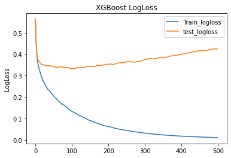
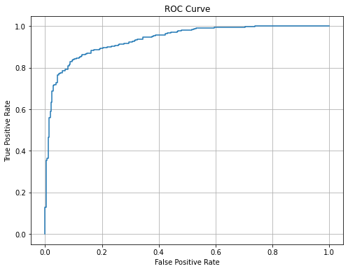

Spark, XGBoost and SKLearn
Whales Classification

ABSTRACT
The echo-location clicks emitted by beaked whales are used to predict whale species (Curviers and Gervais). After reducing the data dimensionality, an XGBoost model is built and tuned. Finally, the model predicts equitably the 2 species of whales with 85% precision and 85% recall. Some hints from the notebook are shown during this article.
MOTIVATION
The echo-location clicks emitted by beaked whales are used to predict 2 whale species (Curviers and Gervais). Specific code tricks of the study are added in the article to avoid you from searching the whole notebook.
DATASET
The classification was done by Professor Hildebrand and became the basis for an estimate of the numbers of animals present at these sites. These results were presented in: Hildebrand, J. A., Baumann-Pickering, S., Frasier, K. E., Trickey, J. S., Merkens, K. P., Wiggins, S. M., McDonald, M. A., Garrison, L. P., Harris, D., Marques, T. A., and Thomas, L. (2015). "Passive acoustic monitoring of beaked whale densities in the Gulf of Mexico," Scientific Reports 5, 16343.
The full dataset has 6.5 million clicks with data of the size of about 27GB. University of California San Diego filters the mis-classified clicks and faulty data.
The sample of 15MB contains about 2000 samples from each species.
DATA PREPARATION AND CLEANING
VARIABLES:
Using Pyspark SQL dataframe and Pandas-On-Spark DataFrame, the PSD byte array is decoded and data preparations are applied to the data set.
Hint: Convert binary array to float array on big data set using Pandas-On-Spark:
The power spectral density MSP of echo-location clicks is more interpretable by the ML model than the MSN signal.
Hint: Transform a float array to a SparkML vector:
The Variance of the MSP is analyzed using distributed PCA projection (Spark) to extract 90% of the variance.
With 25 EigenVectors, the size of the PSD array is reduced by a factor of 4 by distributed projection.
RESEARCH QUESTIONS
Main question: Is it possible to predict whale species based on echo-location clicks ? With what precision and recall?
METHODS
Model
The XGBoost model uses the reduced MSP signal to predict whale species. XGBoost trees are built based on the latest tree result, meaning parallelization is worthless.
Point of comparison
Random classifier on most frequent score as 0.55
Hint: Transform SparkML vector back to an array to apply XGBoost and SKLearn function:
FINDINGS: XGBoost results
Results of the model after tuning hyperparameters.
Hint: Tuning Hyperparameters may take a lot of time. GridSearchCV is a great tool to do it:
Note: The resulting hyperparameters are good but you should fine tune manually the best_params_ results.
Hint: Graphically finding the best number of trees is not precise enough. Here a SKLearn tool to do it:
The top EigenVectors are the most important feature. PCA did a good job.
FINDINGS: What is the model performance?
The ROC is symmetric: Cuviers and Gervais are fairly predicted.
LIMITATIONS
The technique used to obtain the Power Spectral Density of The echo-location clicks is unknown. By using other signal processing (periodogram or Welch), the results may be different.
CONCLUSIONS
The echo-location clicks emitted by beaked whales are used to predict whale species (Curviers and Gervais). Precisely, the power spectral density (PSD) of echo-location clicks. The large size of the PSD array is reduced by a factor of 4 using PCA projection using Spark. The XGBoost model is built and tuned using the XGB Python model and SKLearn. Finally, the model predicts equitably the 2 species of whales with 85% precision and 85% recall.
ACKNOWLEDGEMENTS
Data set from: Hildebrand, J. A., Baumann-Pickering, S., Frasier, K. E., Trickey, J. S., Merkens, K. P., Wiggins, S. M., McDonald, M. A., Garrison, L. P., Harris, D., Marques, T. A., and Thomas, L. (2015). "Passive acoustic monitoring of beaked whale densities in the Gulf of Mexico," Scientific Reports 5, 16343.
The Data Set was filtered by the University Of California San Diego.
REFERENCES
"Passive acoustic monitoring of beaked whale densities in the Gulf of Mexico," Scientific Reports 5, 16343.
University Of California San Diego, Big Data Analysis using Spark.
Further reading
Learning Spark, 2nd Edition by Jules S. Damji, Brooke Wenig, Tathagata Das, Denny Lee.
Frank Kane's Taming Big Data with Apache Spark and Python by Frank Kane.
Hands-On Machine Learning with Scikit-Learn, Keras, and TensorFlow, 2nd Edition by Aurélien Géron.
By Benoit Pont